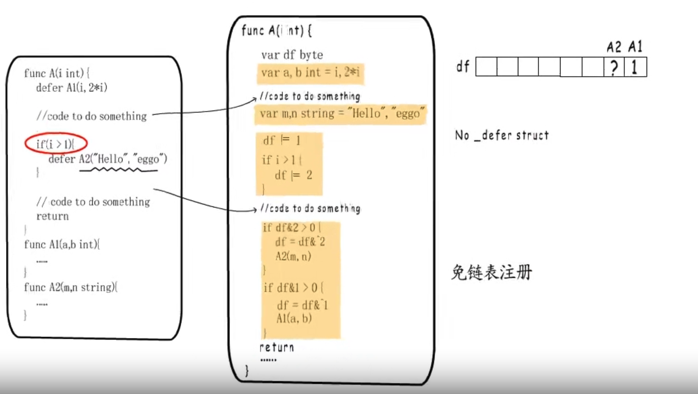

defer流程
- 注册：调用deferproc()注册defer函数，注册到一个链表(_defer),新加入的defer会插入到链表头
- 执行：runtime.deferreturn()

1.12版本缺点：慢
- defer堆上分配，参数还需要在堆与栈之前拷贝
- 用链表存储，效率低
1.14 优化： 编译阶段插入代码，把defer执行逻辑展开在函数内

Open coded defer: 不需要注册到defer链表,但依然不适用于循环中的defer,保持1.12版本
由于没有注册到链表，发生painc或runtime.Goexit要通过栈扫描的方式来发现defer,defer虽然变快了但导致panic变慢
painc
type _painc struct{
argp unsafe.Pointer //defer参数空间地址
arg interface{} // painc参数
link *_painc // link to earlier painc
recoverd bool //是否revoverd
aborted bool //是否abort
}
- painc 执行defer函数的逻辑：先标记后释放
- 异常信息输出顺序与painc顺序一致
- runtime.gopainc 添加链表_*painc
revover: 只是将painc中的recoverd置为true
painc流程检测到painc被恢复后会将painc从链表中移除